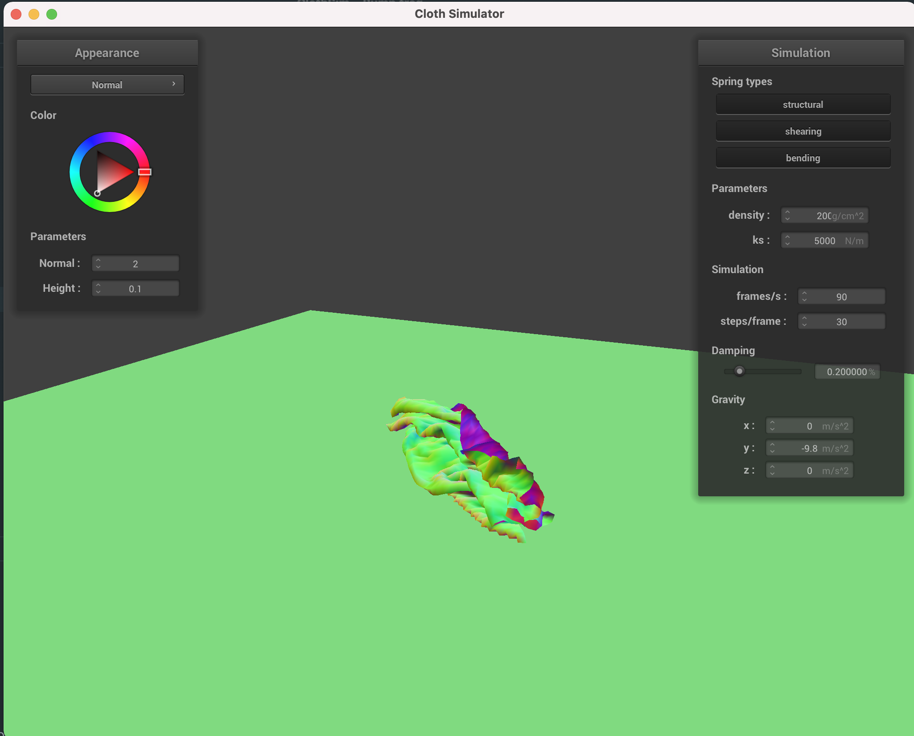

Our goal in this project was to create a physically based simulator for cloth materials. First, we constructed the cloth using a mass-spring system where point masses were evenly dispersed along a given area and connected with different kinds
of springs like structural, bending, and shear springs. After the basic structure was made, we added support for gravity and motion using Verlet integration, Hook's law, damping, and some position update constraints so the springs wouldn't be
deformed too much in one step. These basic rules allowed the cloth to fall realistically, so then we added support for collisions so the cloth could land and rest on an object. We implemented collision tests for spheres and planes and
constrained its motion so that if the next point mass position would go inside the object, we forced it to rest slightly above the surface. After that, we added self collision tests so that if two point masses got too close to each other,
they'd be forced apart to a general minimum distance. This was optimized by using spatial hashing so that certain points only needed to test for collision if they were in the same spatial region. Finally, we added different shaders to give a
nice appearance to the cloth. Blinn-Phong model shading allowed for semi-realistic light shading, and texture maps, bump mapping, and displacement mapping added more flavor to the appearance. Displacement mapping was especially unique since
not only were the pixel colors set by the shader, but also to some extent, the vertex positions. Finally, the mirror reflection added a sort of ray-tracing flavor to the project.
We ran into some challenges with ensuring the vectors and forces were pointing the right direction and that vectors were normalized. We also had some other small bugs with point mass position correction. Although it wasn't exactly a bug, we
had some trouble figuring out the correct parameters for the shaders to reproduce the source results; however, it was a fun experience playing around with how each parameter affected the final appearance.
Part 3. Collisions with other objects
A lower spring constant will reduce the integrity of the cloth and the forces keeping it together so the cloth hangs more directly down and stretches lower. With a higher spring constant, the cloth becomes more stiff so when it rests on the
sphere, it still extends outwards a lot as the springs are preventing it from bending and extending downwards.
ks = 500ks = 5000ks = 50000
Resting on a plane
Part 4. Self Collisions
Default parameters falling cloth
Early state as the cloth just begins to fallIntermediate state where the cloth starts the bend but before it fully collides with the groundNear-resting state where the cloth has generally fully foldedFinal resting state
Varying density
A lower density cloth is a lighter cloth, all else being equal, so the dominant force in the simulation comes from the spring forces. This means when the cloth hits the ground, it'll bounce comparatively high and at a resting state, it'll be
pretty smooth since the point masses are light enough that the springs can fully extend.
With a high density cloth, the dominant force will come from gravity, so as the cloth starts falling, it immediately folds a lot and doesn't bounce. Additionally, at rest, gravity acts to keep the point masses stationary and crumpled so the
cloth has many folds.
Low density cloth bounces after hitting the groundLow density cloth resting state

High density cloth resting state
Varying spring constant
The spring constant generally has an inverse effect compared to density in these simulations. With a low spring constant, gravity/external forces are dominant so the cloth folds easily and remains crumpled at rest.
With a high spring constant, the spring forces will be dominant and try to return the cloth to its normal flat state. Thus, it tends to bounce more upon hitting the ground, and at rest, it's flatter and has less folds.
Low spring constant cloth resting stateHigh spring constant cloth bounces after hitting the groundHigh spring constant cloth resting state
Part 5. Shading
A shader program is a program that determines the color for a particular pixel on screen. There's a lot of different types of shaders that can be used to choose the color, for example, you can incorporate vertex normal information to do
normal shading, or incorporate lighting information like position of lights, angle of light and angle of viewing, etc. A vertex shader tracks information about vertices like their position and normal vectors, texture map coordinates, etc. The
position of vertices can be changed for displacement mapping. The program then interpolates these values along a face. Fragment shaders then use the values from the vertex shader to determine the output color of a fragment.
Blinn-Phong Shading
The Blinn-Phong shading model models lighting on objects as consisting of three main types, ambient, diffuse, and specular. Ambient lighting is general lighting as if a small amount of light was coming from all directions and lights
everything at every angle to a certain degree. Diffuse lighting is lighting that is view-independent. It models light that comes in from a particular direction and assumes that it gets scattered uniformly in all directions. Thus, the
brightness on a particular part of an object only depends on its distance and angle to the light source. Specular lighting is view-dependent, where the brightness is maximized when the angle of view from the normal matches the angle of light
coming in from the normal. This means the direction of view will be aligned with the direction of reflection. Also, by controlling the exponent power, we can control how small or large the specular area is.
Ambient, k_a = 0.5, I_a vector of onesDiffuse, k_d = u_colorSpecular, k_s = 0.5, p = 100Blinn-Phong, all the same parameters as above except k_a = 0.1